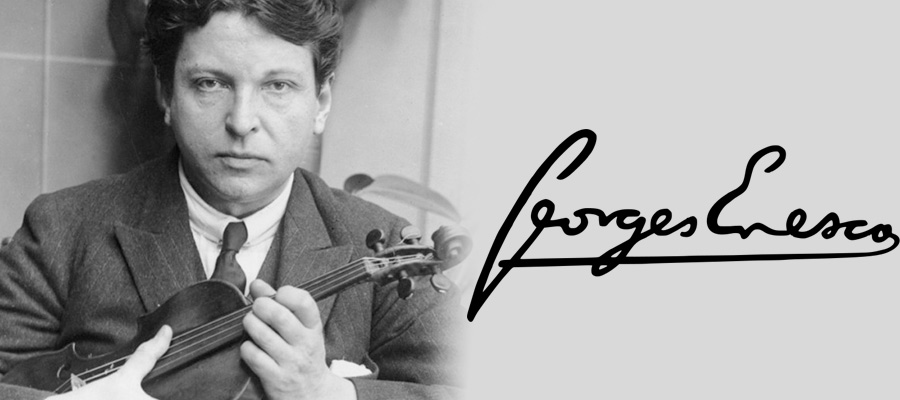

George Enescu
Considerat a fi un copil-minune, micul Jurjac (asa cum ii spuneau
familia si cei apropiati), visa sa devina compozitor inca de la varsta
de 5 ani: „Lucru curios: nu stiam nimic, nu ascultasem nimic sau prea
putin, nu am avut pe langa mine vreo persoana sa ma influenteze si,
totusi, de copil, am avut aceasta idee fixa de a fi compozitor. De a fi
numai compozitor”, ii declara mai tarziu George Enescu lui Bernard
Gavoty, critic muzical si jurnalist de radio.

„Ca un adevarat artist, Enescu urmareste descoperirea ideii
compozitorului. In tot ce interpreteaza el, se simte pecetea unei
gandiri profunde, a unei bogate culturi si distinctii…Tonul viorii lui
avea un ce personal, un vibrato cald, iar trasatura arcusului era de o
finete rar intalnita. Maestrul anima instrumentul, imprima intregii
ambiante enorma sa personalitate, te fascina si crea o atmosfera de mare
inaltare artistica.”
- renumitul violonist David Oistrah, despre George Enescu.
- renumitul violonist David Oistrah, despre George Enescu.